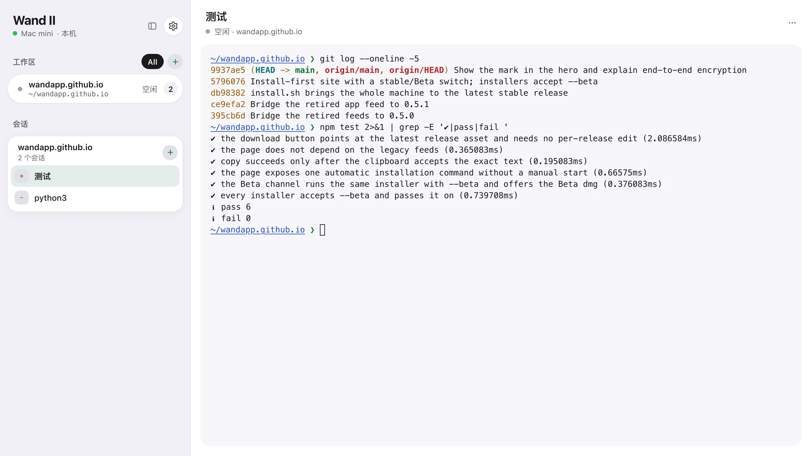

Wand II
连接本机或远程电脑，继续你的终端工作。
- 端到端加密Noise 协议，不依赖证书
- 终端常驻关掉窗口、升级服务都不中断
- 多台主机本机与远程电脑在同一处
- 原生 Mac AppSwiftUI 绘制，不是网页套壳
curl -fsSL https://wandapp.github.io/install.sh | sh
Mac 上安装 App 与后台服务，Linux 上安装服务；已安装的直接升级到最新正式版。
下载 macOS 版macOS 13 或更高版本 · Apple Silicon

说明
- 端到端加密
- Mac 与 iPhone 和每台主机之间的通讯全部端到端加密（Noise 协议）。配对时交换密钥，之后每条连接都用它验证主机身份并协商新的会话密钥，不依赖 https 或证书；中途的路由器、代理都只能看到密文。浏览器访问网页不在此范围内。
- Mac
- 安装 Wand App 与后台服务，登录后自动运行。已有的 App 会就地更新，正在运行的终端不会中断。
- Linux
- 在 SSH 终端运行同一条命令，按提示设置网页账号，再用浏览器打开服务器的局域网地址（端口 3210）。支持 Debian 12、Ubuntu 24.04 或更新的 systemd / glibc 系统，ARM64 与 x64。
- 连接其他电脑
- 在远程电脑的 Wand 网页里点主机栏的加号，复制配对码；回到 Mac App，在主机栏点加号粘贴。两台电脑须能互相访问。